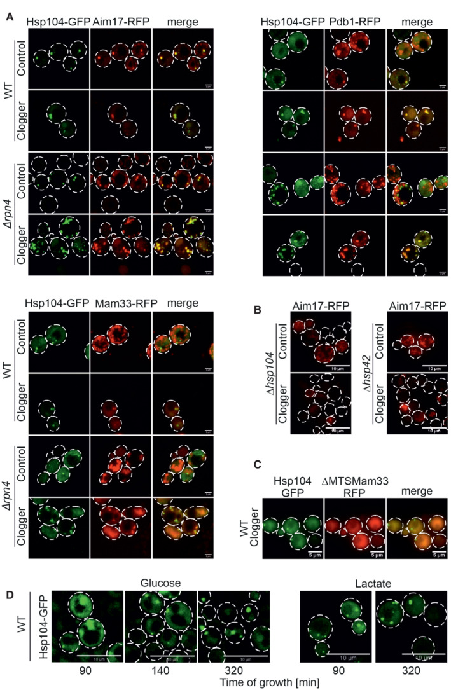

MitoStore
A transient cytosolic protein granule characterized in budding yeast that sequesters non-imported mitochondrial precursor proteins, is enriched for presequence-containing cargo and associates with the mitochondrial surface. [DOI:10.15252/embj.2022112309]

NCBITaxon:4932) · Lena Krämer, Niko Dalheimer, Markus Räschle, Zuzana Storchová, Jan Pielage, Felix Boos, Johannes M Herrmann (2023), Figure 5; CC BY 4.0, via PubMed Central. Unmodified. · CC_BY_4_0 · source: PMC PMC10068336.1 embj2022112309-fig-0005 · DOI:10.15252/embj.2022112309Synonyms: MitoStores
Part of: GO:0005737 — cytoplasm (no local record)
Components
| Component | Type | Part of / acts on | Grounding | Genes | Stoichiometry | Essential | Role |
|---|---|---|---|---|---|---|---|
| presequence-enriched protein precursor cargo | Other | part of | Reviewed label only (reviewed name; no accession asserted) | UNKNOWN | Non-imported proteins enriched for mitochondrial precursors with N-terminal targeting sequences. Membership depends on cargo and condition; some secretory precursors are also reported.
| ||
| Small heat shock protein | Protein | part of | InterPro:IPR031107 | HSP42, HSP26 | CONDITIONAL | Chaperone class represented by Hsp42 and Hsp26, whose stress-enriched co-purification supports candidate residence. Hsp42 is required for the tested Aim17-positive granules; the same requirement is not established for Hsp26. Neither fixed copy number nor identical functions are asserted.
| |
| Hsp104-type disaggregase | Protein | acts on | Reviewed label only (reviewed name; no accession asserted) | HSP104 | CONDITIONAL | Chaperone bound to precursor-containing granules. HSP104 loss prevents the tested Aim17-positive granules, supporting a condition-specific formation requirement. It is not modeled as a fixed coat, nor does this experiment directly measure an Hsp104-mediated cargo-release step.
|
Organism-specific protein examples
Named proteins in which each component's role was established, with the organism the evidence comes from. The component above is the taxon-agnostic family; these are the specific entries behind it.
Small heat shock protein
| Accession | Protein | Gene | Organism | Entry |
|---|---|---|---|---|
UniProtKB:Q12329 | Heat shock protein 42 | HSP42 | Saccharomyces cerevisiae S288C (NCBITaxon:559292) | REVIEWED |
Role and evidence (2 references)Reviewed reference-sequence example; not a reassignment of YPH499-derived experiments to S288C. Figures 4C-D support co-purification; Figures 5B and 6D show the Hsp42-loss granule phenotype.
| ||||
UniProtKB:P15992 | Heat shock protein 26 | HSP26 | Saccharomyces cerevisiae S288C (NCBITaxon:559292) | REVIEWED |
Role and evidence (2 references)Reviewed reference-sequence example; not a reassignment of YPH499-derived experiments to S288C. Figures 4C-D support clogger-dependent co-purification with Hsp104. Hsp26 essentiality and direct granule localization were not established here.
| ||||
Hsp104-type disaggregase
| Accession | Protein | Gene | Organism | Entry |
|---|---|---|---|---|
UniProtKB:P31539 | Heat shock protein 104 | HSP104 | Saccharomyces cerevisiae S288C (NCBITaxon:559292) | REVIEWED |
Role and evidence (2 references)Reviewed reference-sequence example; not a reassignment of YPH499-derived experiments to S288C. Figures 3-5 show granule association, cargo co-purification and the HSP104-loss reporter-granule phenotype.
| ||||
Canonical examples
NCBITaxon:4932Saccharomyces cerevisiae — The Methods state YPH499deltaarg4 derivatives unless otherwise specified. Native UniProt taxonomy lists YPH499 under species 4932; a bounded NCBI YPH499-name query yielded no separate strain taxid. The supplemental strain table was not independently inspected. [DOI:10.15252/embj.2022112309]NCBITaxon:559292Saccharomyces cerevisiae S288C — Reference-sequence provenance for the reviewed Hsp42, Hsp26 and Hsp104 examples. This is not the asserted background of the YPH499-derived imaging and perturbation experiments. [UniProtKB:Q12329]
Functions
- temporary sequestration of non-imported precursor proteins — Concentrates a condition-dependent, presequence-enriched protein cargo in cytosolic granules near mitochondria when precursor supply exceeds import capacity.
DOI:10.15252/embj.2022112309Figures 3-5 establish the granules, cargo enrichment and condition-dependent reporter incorporation; Figure 6C/E-F supports mitochondrial-surface association.
- retention of import-competent mitochondrial precursors — A pulse/chase split-GFP assay supports later mitochondrial access of Aim17 synthesized during import stress. This does not establish that every stored cargo is import competent, that all imported protein passed through a granule, or that an individual molecule was tracked directly from a granule into mitochondria.
DOI:10.15252/embj.2022112309Figure 6A-B and Results follow reporter redistribution and post-induction Aim17-GFP11 access to mitochondrial Oxa1-GFP1-10 after clogger expression stops.
Mechanism graphs
Condition-dependent precursor recruitment into MitoStores (ASSEMBLY)
| Subject | Predicate | Object | Evidence |
|---|---|---|---|
| Expression of mitochondrial import clogger | promotes cytosolic accumulation of | Non-imported precursor protein cargo |
|
| Non-imported precursor protein cargo | accumulates in | MitoStore (cellstructuremech:mitostore) |
|
| HSP42 deletion | impairs formation of | MitoStore (cellstructuremech:mitostore) |
|
| HSP104 deletion | impairs formation of | MitoStore (cellstructuremech:mitostore) |
|
| Removal of the Mam33 targeting sequence | impairs | Mam33 incorporation into granules |
|
| Mam33 incorporation into granules | contributes reporter cargo to | MitoStore (cellstructuremech:mitostore) |
|
Reporter recovery and chaperone-dependent stress tolerance (FUNCTION)
| Subject | Predicate | Object | Evidence |
|---|---|---|---|
MitoStore (cellstructuremech:mitostore) | sequesters | Stored precursor cargo represented by Aim17 |
|
| Stored precursor cargo represented by Aim17 | can remain competent for | Post-chase Aim17 access to mitochondria |
|
| Stopping galactose-induced clogger expression | permits recovery of | Post-chase Aim17 access to mitochondria |
|
| RPN4 deletion in the tested assays | increases the measured recovery of | Post-chase Aim17 access to mitochondria |
|
| RPN4 deletion in the tested assays | increases | Viability during clogger stress |
|
| HSP42 deletion in the rpn4 background | reduces | Viability during clogger stress |
|
| HSP104 deletion in the rpn4 background | reduces | Viability during clogger stress |
|
Discussions
- INTERPRETATION (RESOLVED): Keep the named precursor-rich cytosolic granule separate from other mitochondrial or protein deposits. Similarity, a shared chaperone marker and organelle proximity do not establish exact structure identity.
- INTERPRETATION (RESOLVED): Retain the evidence difference between Hsp42 and Hsp26 within the shared small-HSP component class. A family-level component must not imply identical member requirements or direct localization evidence for every member.
- CURATION_TODO (OPEN): Resolve exact Hsp104-family grounding and native cargo/resident inventories. Reporter enrichment and Hsp104 interactors are not a complete source-neutral composition model.
- INTERPRETATION (RESOLVED): Do not import every Hsp104 interactor, regulator or mitochondrial-surface factor as a MitoStore component. General chaperone interactions and related aggregate assays may denote different structures.
- INTERPRETATION (RESOLVED): Keep the import-chase and survival conclusions specific to their measured readouts. Chaperone perturbations are pleiotropic and a reporter chase does not track every stored molecule.
- CURATION_TODO (OPEN): Reconcile the paper-linked PRIDE deposit's bibliography and processing metadata before using its raw-data inventory. The accession resolves but inconsistent metadata must not silently define composition or sample scope.
- CURATION_TODO (OPEN): Resolve finer granule identity boundaries, experimental strain mappings, prevalence and material properties. One species and optical reporter assays do not establish universal prevalence, fixed dimensions or a liquid phase.
Datasets
- Paper-linked Hsp104 AP-MS proteomics deposit (
PXD035762) · PRIDE · PROTEOMICS
Organism: Saccharomyces cerevisiaeNative metadata inspected on 2026-10-05. Its references field names the Ubc8 paper with DOI 10.26508/LSA.202201526, while its processing narrative reports 2920 proteins and the MitoStore Hsp104 IP panel reports 1154. The publication field follows the MitoStore paper's own linkage. No sample count, full constituent inventory or corrected archive bibliography is inferred; raw files were not read.
DOI:10.15252/embj.2022112309The inspected Data availability statement explicitly cites PXD035762.https://www.ebi.ac.uk/pride/ws/archive/v2/projects/PXD035762Native title and sample-processing description concern MitoStores/Hsp104 IP-MS; archive bibliographic and processing metadata conflict with that linkage.
Evidence
DOI:10.15252/embj.2022112309Primary definition, precursor/chaperone association, reporter interventions, recovery assay and imaging.DOI:10.1073/pnas.2300475120Comparative boundary source: Tom70-associated heat-stress aggregates share features with MitoStores, but its experiments do not establish exact identity for every aggregate.
Curation history
2026-10-05T08:21:01Zcodex · CREATED_RECORD — Scaffolded by scripts/new_record.py2026-10-05T08:25:34Zcodex · EXPANDED_RECORD — Added source-bounded MitoStore composition, family/reference grounding, precursor recruitment and recovery graphs, dataset-conflict provenance, and an inspected CC BY 4.0 primary figure.2026-10-21T18:45:05Zcurate-causal-graphs-skill · UPDATED_CAUSAL_GRAPHS — Grounded self-referential causal node 'mitostore' to cellstructuremech:mitostore.